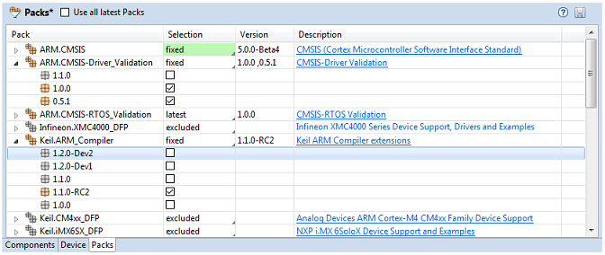

The Packs tab of the RTE configuration editor provides the following functionality:

Enable Use all latest Packs while the project is under active development. Software components are automatically updated when a newer version of a Software Pack is installed.
Disable this option to maintain a project with specific Software Pack selection. This might be required when a project depends on software components or APIs that are available only in specific versions of a Software Pack. In this case use Selection to choose:
See also: